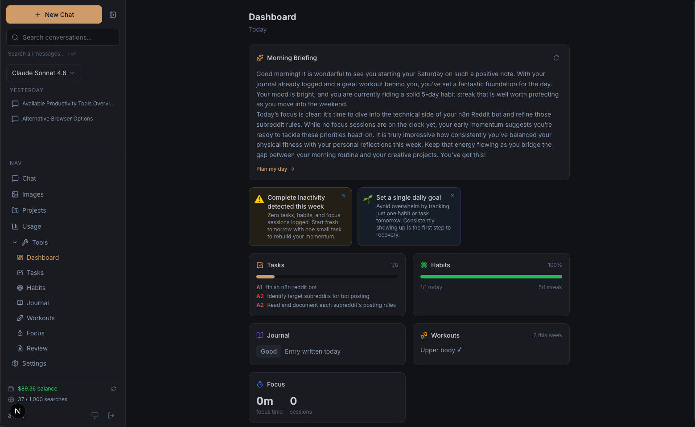
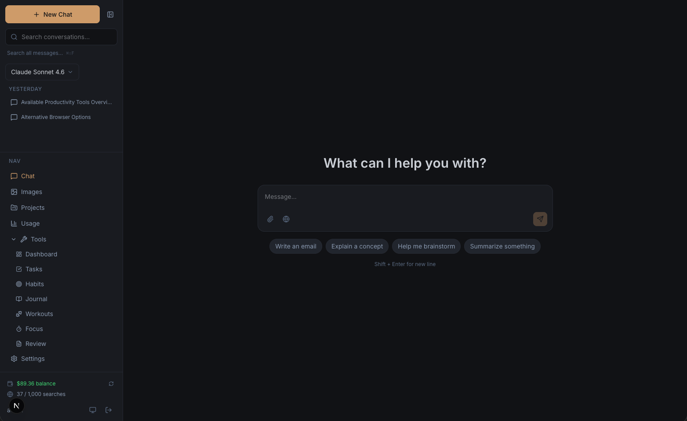
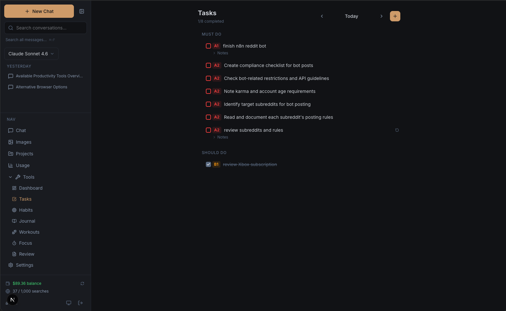
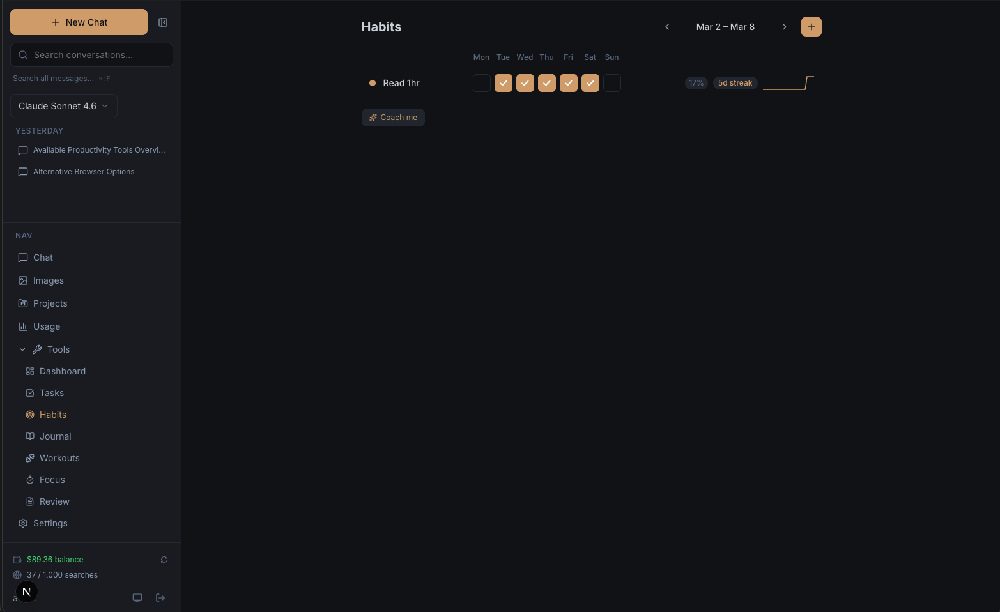
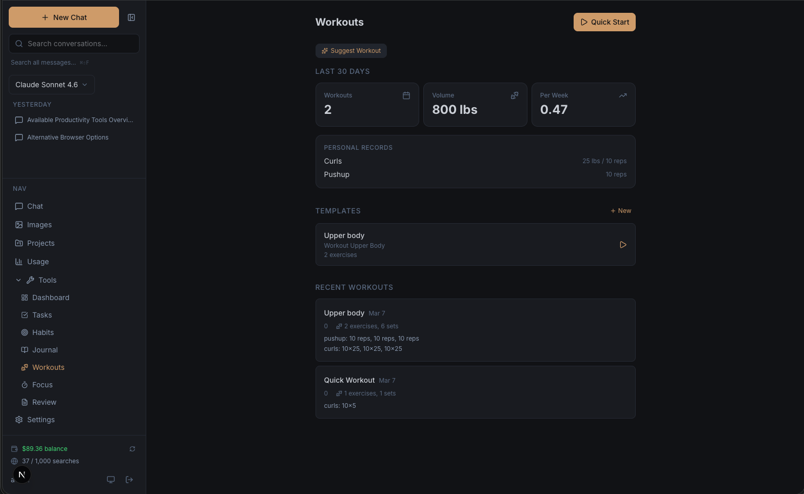
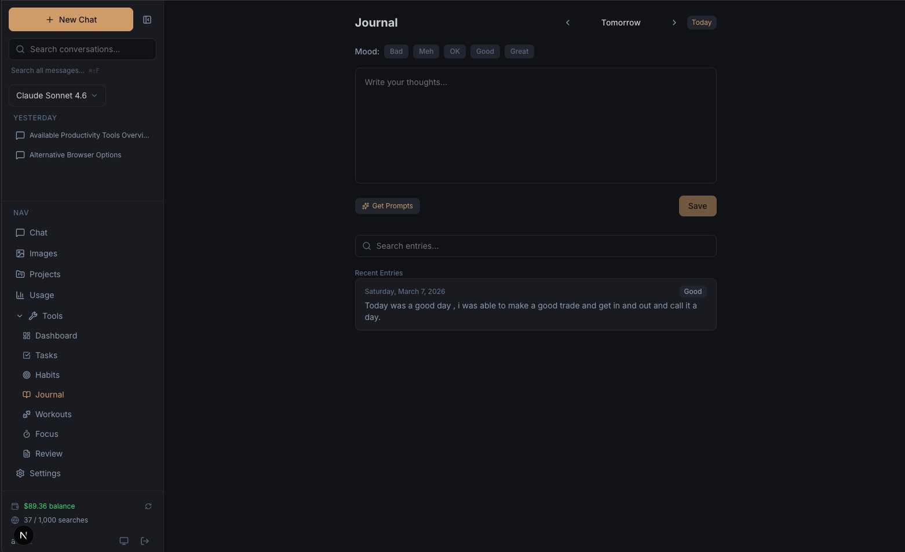
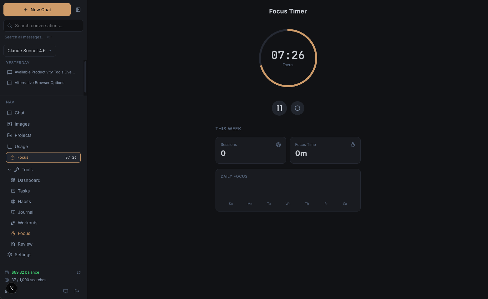
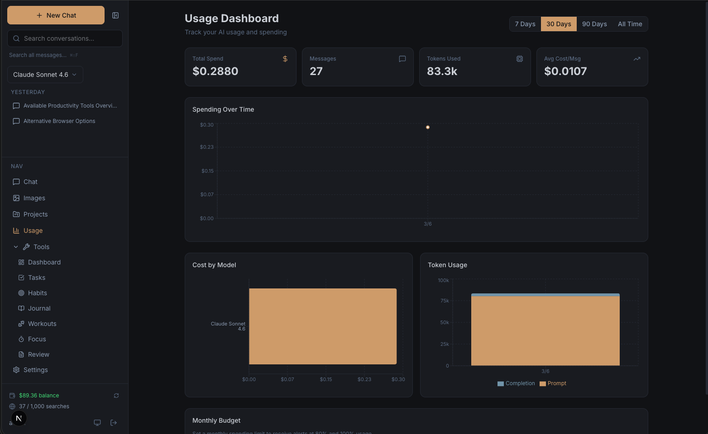
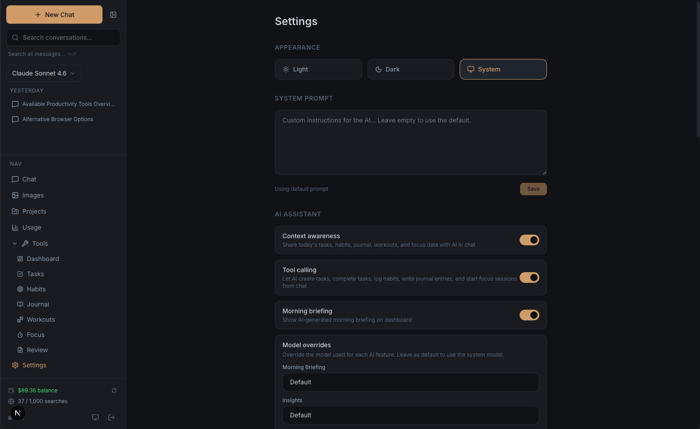

Not another chatbot wrapper. A personal AI assistant with built-in productivity tools, agent capabilities, and multi-provider AI support. Deploy it yourself, use your own API keys across Anthropic, Google, OpenAI, or OpenRouter, and own your data.

Chat, tasks, habits, journal, workouts, focus timer, and weekly reviews. The AI has context on all of it.
Native support for Anthropic, Google, and OpenAI-compatible providers, plus OpenRouter for any other model. Switch mid-conversation. Agent mode and chat mode toggle. Per-message cost tracking.
Franklin Covey A/B/C priorities. Drag reorder within groups. Daily rollover. Recurrence. Project linking.
Weekly grid view. Streak tracking with sparklines. Completion rate badges. 30-day heatmap per habit.
Auto-saving editor. Mood tracking. AI writing prompts. Full-text search across all entries.
Reusable templates. Active workout tracking with sets. Volume stats, personal records, weekly averages.
Set goals and link them to tasks and habits. Track progress over time. The AI uses your goals to prioritize briefings and insights.
Pomodoro with circular progress. Link sessions to tasks. 7-day chart. Top tasks by focus time.
Tavily-powered search with AI summarization. Toggle per-message. Sources inline with citation linking.
Monthly calendar with activity dots per day. Click any day for a detail panel showing tasks, habits, journal, workouts, and focus sessions.
13 built-in tools the AI can invoke directly from chat. Create tasks, log habits, start focus sessions, search past conversations, and more. Mutation tools require your approval before executing.
Spending charts by day, week, month. Per-model cost breakdown. Monthly budget with threshold alerts.
Generate images through any configured image model. Gallery view with full history.
Manage API keys and provider configuration from the UI. Set per-user usage limits, encrypted key storage, and model definitions without touching env vars after the initial deploy.
Dark and light themes. Responsive design. Installable as a PWA on any device.








Switch to Agent mode and the AI fetches your productivity data on demand using tools — tasks, habits, streaks, focus sessions, past conversations. It doesn't just answer questions; it takes action and understands your priorities.
The user asked about selling GitHub repo access. The AI searched the web, then connected the results to their existing task list — without being asked.
Create tasks, log habits, start focus sessions, and more directly from chat. 7 mutation tools with approval UI, 6 read-only tools that auto-execute. 13 tools total.
AI-generated daily summary on the dashboard. "Plan my day" mode. Cached per day, regenerate on demand.
Cross-tool pattern analysis. Dismissable insight cards: encouragement, warnings, and suggestions based on your data.
Modern stack, no lock-in. Deploy on Vercel, self-host with Docker, or run it locally. Use your own API keys for everything.
Clone the repo, add your API keys, run one SQL file, and start the dev server.
git clone the repo and run npm install
Copy .env.example to .env.local and fill in your Supabase credentials and signup secret. Most configuration — API keys, providers, model definitions — is managed from the admin panel after first deploy.
Run supabase/migrations/schema.sql in the Supabase SQL Editor. One file creates all tables, indexes, and RLS policies.
Run npm run dev and sign up with your secret code. Grant yourself admin in Supabase to manage models.
White-labeled and ready to rebrand. Swap the name, colors, icons, and models without touching the code.
Set NEXT_PUBLIC_SITE_NAME to change the app name everywhere. Replace the icons in /public/ to rebrand.
Add models from any supported provider — Anthropic, Google, OpenAI, or OpenRouter — from the admin panel. Set display name, provider, pricing, and sort order. No hardcoded lists. Configure agent mode or chat mode as the default per deployment.
Four levels of customization: default, profile, conversation, and project. Each level overrides the one above it.
Light, dark, and system themes built in. All colors defined via CSS variables. Swap the accent color in one file.
Detailed guides for deployment, administration, daily use, and customization.
Step-by-step deployment: Supabase project creation, database migration, Vercel deployment, first-run configuration, and model recommendations.
Provider management, model configuration, usage limits, rate limiting, user management, and app configuration.
Chat modes, productivity tools, AI features, web search, projects, settings, and PWA installation.
Branding, theming, system prompts, adding custom tools, database schema patterns, and API route patterns.